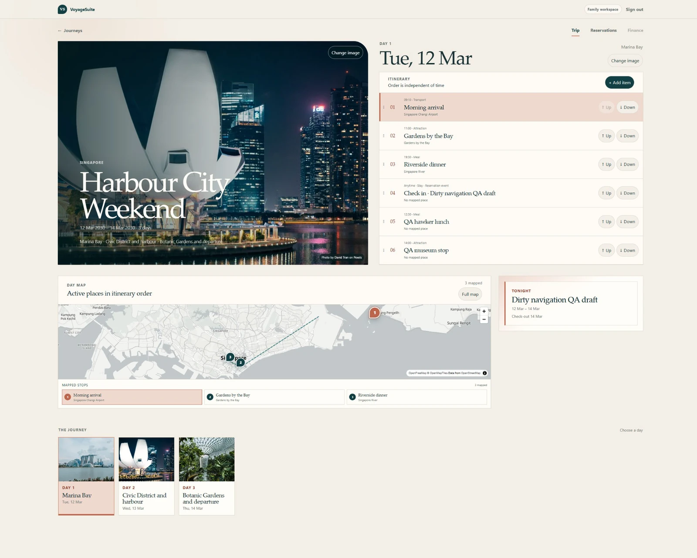

01 · Web application
Plan deeply at home. Read effortlessly while travelling.
A personal trip-planning web application for building detailed multi-day itineraries and viewing them easily while travelling.
Development focus: responsive application design, itinerary data modelling, mobile travel mode, authentication, reliable date handling, trip lifecycle management and export workflows.
Responsive UITrip API routesGitHub Actions CIAutomated tests
VoyageSuite · full desktop QA capture
